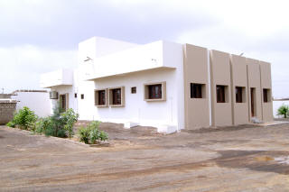

SITARAM TRANSPORT CO. |
Mobile Mobile
|
: +91 98252 22948 : +91 99250 46019 : sitaramtransportkandla@gmail.com kandla@sitaramtransport.com |
Infrastructure
We stand at a threshold of a world where dreams are realized and lives are impacted positively. We believe that people work at their best only when they work with the best. That best may be anything but resources with which they work.
Infrastructure plays a pivot role to provide balance between flexibility and cost, while facilitating innovation and future business planning. An infrastructure that is efficient, scalable and secure, results in an improved service quality, productivity and end-user satisfaction.
At Sitaram Transport Co., We try and manage to offer the best available facilities and resources to our staff, business and one and all directly or indirectly conncted with us, in turn to facilitate our clients and make the operations as soothing, transparent and safe as it could be.
Workplace |
Leveraging across over 4000 sqr. mtr., We have a workplace equiped with all the modern amenities and technological advancements so as to provide an environment, which is efficient, scalable and secure.
To better manage operations and keep a transparency right through, we have categorized our operations. Those operations are carried out by respective departments, who apart from mastering their respective skills, posses a great communication fundamentals to maintain transparency throughout.
Besides having seperate chambers, for each department and managing director, we have a conference room (where we get together to discuss various aspects of the concerned departments and arrange meetings for future business plannings), a training room, a workshop and a pantry.
Workforce |
It is a universal truth, that it is people who make the difference. We have ensured that our employees understand that there is an expectation from each to make significant contribution.
We have a dynamic leadership, a motivated management and inspired and self-driven taskforce.
Various departments require people with different skills and efficiency to work, there heart out, to contribute to the growth, not only of company, but their own.
We have provided resources, and hence we make sure, that those resources are being utilized to optimum use for the betterment of the services we offer and growth of the company.
We discover and develop the skills of every individual working for our company and make sure that they are in the right place, at the right time and doing the right things by organizing various training programmes at specific intervals.
Workshop |
A large number of fleets and network expanded across india, we keep ourselves better prepared for the service, repairs and maintenance of our fleets in turn to ensure that we keep our promise of providing our clients with the prompt, safe and cost effective transporation solutions.
Highly skilled professionals make sure that our fleets are well maintained and audit them regularly after each trip for any malfunctioning.
To help cover critical breakdowns, There is a requirement for a rationale to assess the optimum number of components to hold in stock and the optimum time and quantity for re-ordering. The operation of a planned preventive maintenance system enables one to repair or replace the item before failure, hence we have a well equiped in-house store in place.
Rescue Team |
Accidents happen, you can't deny this fact. We stand tall to deliver during this high times and for this to accomplish, we have formed a rescue team.
This team is trained to save lives and recover cargo (or make sure it is safe). They contribute time and resources to identify, where the accident occured, what the nature of accident is, are there any victims, whether rescue or recovery is more important, and perform various actions accordingally.
Technology |
We are living in an age of remarkable technological change that is forcing us to think very hard about the linkages between technology and economic development, which makes us realize that technological innovation is almost certainly the key driver of long term economic growth.
Having a strong belief in the importance of technology, we focus on coming up with policies that can encourage more technological progress.
Be it a modern technological advancements in the field of communication, security systems or information technology, we are and will always be well equiped to enhance the scope in using them at its fullest.

Reception Area. A warm welcome to the visitors.

A passage through various departments.

Managing director's Chamber.

An inside view of operations department.

Workshop with lodging and boarding facilities.
An outside view of our Head Office.